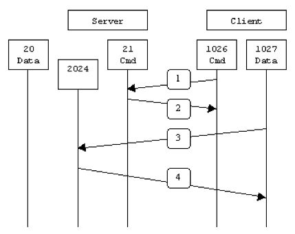

Unofficial - F5 Certification Exam Prep Material > F5 101 - App Delivery Fundamentals Study Guide 11/01/19 Source | Edit on
Section 1 - OSI¶
Objective - 1.01 Explain, compare, and contrast the OSI layers¶
1.01 - Describe the function of each OSI layer
Ref: 1, pp. 168-181.
The OSI Model
The term OSI Model is short for Open System Interconnection Basic Reference Model. The OSI Model consists of seven different layers. Each layer of the model is designed so that it can perform a specific task, and facilitates communications between the layer above it and the layer below it. You can see what the OSI Model looks like in the figure below.
The Application Layer
The top layer of the OSI model is the Application layer. The first thing that you need to understand about the application layer is that it does not refer to the actual applications that users run. Instead, it provides the framework that the actual applications run on top of.
To understand what the application layer does, suppose that a user wanted to use Internet Explorer to open an FTP session and transfer a file. In this particular case, the application layer would define the file transfer protocol. This protocol is not directly accessible to the end user. The end user must still use an application that is designed to interact with the file transfer protocol. In this case, Internet Explorer would be that application.
The Presentation Layer
The presentation layer does some rather complex things, but everything that the presentation layer does can be summed up in one sentence. The presentation layer takes the data that is provided by the application layer, and converts it into a standard format that the other layers can understand. Likewise, this layer converts the inbound data that is received from the session layer into something that the application layer can understand. The reason why this layer is necessary is because applications handle data differently from one another. In order for network communications to function properly, the data needs to be structured in a standard way.
The Session Layer
Once the data has been put into the correct format, the sending host must establish a session with the receiving host. This is where the session layer comes into play. It is responsible for establishing, maintaining, and eventually terminating the session with the remote host.
The interesting thing about the session layer is that it is more closely related to the application layer than it is to the physical layer. It is easy to think of connecting a network session as being a hardware function, but sessions are established between applications. If a user is running multiple applications, several of those applications may have established sessions with remote resources at any time.
The Transport Layer
The Transport layer is responsible for maintaining flow control. An operating system allows users to run multiple applications simultaneously and it is therefore possible that multiple applications may need to communicate over the network simultaneously. The Transport Layer takes the data from each application, and integrates it all into a single stream. This layer is also responsible for providing error checking and performing data recovery when necessary. In essence, the Transport Layer is responsible for ensuring that all of the data makes it from the sending host to the receiving host.
The Network Layer
The Network Layer is responsible for determining how the data will reach the recipient. This layer handles things like addressing, routing, and logical protocols. Since this series is geared toward beginners, I do not want to get too technical, but I will tell you that the Network Layer creates logical paths, known as virtual circuits, between the source and destination hosts. This circuit provides the individual packets with a way to reach their destination. The Network Layer is also responsible for its own error handling, and for packet sequencing and congestion control.
Packet sequencing is necessary because each protocol limits the maximum size of a packet. The amount of data that must be transmitted often exceeds the maximum packet size. Therefore, the data is fragmented into multiple packets. When this happens, the Network Layer assigns each packet a sequence number. When the data is received by the remote host, that device’s Network layer examines the sequence numbers of the inbound packets, and uses the sequence number to reassemble the data and to figure out if any packets are missing. If you are having trouble understanding this concept, then imagine that you need to mail a large document to a friend, but do not have a big enough envelope. You could put a few pages into several small envelopes, and then label the envelopes so that your friend knows what order the pages go in. This is exactly the same thing that the Network Layer does.
The Data Link Layer
The data link layer can be sub divided into two other layers; the Media Access Control (MAC) layer, and the Logical Link Control (LLC) layer. The MAC layer basically establishes the computer’s identity on the network, via its MAC address. A MAC address is the address that is assigned to a network adapter at the hardware level. This is the address that is ultimately used when sending and receiving packets. The LLC layer controls frame synchronization and provides a degree of error checking.
The Physical Layer
The physical layer of the OSI model refers to the actual hardware specifications. The Physical Layer defines characteristics such as timing and voltage. The physical layer defines the hardware specifications used by network adapters and by the network cables (assuming that the connection is not wireless). To put it simply, the physical layer defines what it means to transmit and to receive data.
1.01 - Differentiate between the OSI layers
OSI Layers
Application (Layer 7)
This layer supports application and end-user processes. Communication partners are identified, quality of service is identified, user authentication and privacy are considered, and any constraints on data syntax are identified. Everything at this layer is application-specific. This layer provides application services for file transfers, e-mail, and other network software services.
Presentation (Layer 6)
This layer provides independence from differences in data representation (e.g., encryption) by translating from application to network format, and vice versa. This layer formats and encrypts data to be sent across a network, providing freedom from compatibility problems. It is sometimes called the syntax layer.
Transport (Layer 4)
This layer provides transparent transfer of data between end systems, or hosts, and is responsible for end-to-end error recovery and flow control. It ensures complete data transfer.
Network (Layer 3)
This layer provides switching and routing technologies, creating logical paths, known as virtual circuits, for transmitting data from node to node. Routing and forwarding are functions of this layer, as well as addressing, internetworking, error handling, congestion control and packet sequencing.
Data Link (Layer 2)
This layer provides switching and routing technologies, creating logical paths, known as virtual circuits, for transmitting data from node to node. Routing and forwarding are functions of this layer, as well as addressing, internetworking, error handling, congestion control and packet sequencing.
1.01 - Describe the purpose of the various address types at different OSI layers
OSI layers functional
- Physical - Hubs, Repeaters, Cables, Optical Fiber, SONET/SDN,Coaxial Cable, Twisted Pair Cable and Connectors
- Data Link - 802.11 (WLAN), Wi-Fi, WiMAX, ATM, Ethernet, Token Ring, Frame Relay, PPTP, L2TP and ISDN
- Network - IPv4, IPV6, IPX, OSPF, ICMP, IGMP and ARP
- Transport - TCP, SPX and UDP
- Session layer - Logical Ports 21, 22, 23, 80 etc.
- Presentation layer - SSL, WEP, WPA, Kerberos,
- Application Layer - DHCP, DNS, FTP, HTTP, IMAP4, NNTP, POP3, SMTP, SNMP, SSH, TELNET and NTP
Objective - 1.02 Explain Protocols and Technologies Specific to the Data Link Layer¶
1.02 - Explain the purpose of a switch’s forwarding database
Forwarding Database
A forwarding database is a table used by a Layer 2 device (switch/bridge) to store the learned MAC addresses of nodes on the attached local broadcast domain/domains (VLANS) and the port (interface) that MAC address was learned on. The MAC addresses are learned transparently as the switch forwards traffic.
How it works
When an Ethernet frame arrives at a Layer 2 device, the Layer 2 device will inspect the source MAC address of the frame and associate it to the port that the frame arrived on in the forwarding database. This simply creates a table that can be cross-referenced for device locations. When the table is populated it allows the Layer 2 device to look at the destination MAC address of the arriving Ethernet frame and find the destination port for that MAC address, to know where to send that specific Ethernet frame. If the FDB table doesn’t have any information on that specific MAC address it will flood the Ethernet frame out to all ports in the broadcast domain (VLAN).
1.02 - Explain the purpose and functionality of ARP
ARP
ARP defines the exchanges between network interfaces connected to an Ethernet media segment in order to map an IP address to a link layer address on demand. Link layer addresses are hardware addresses (although they are not immutable) on Ethernet cards and IP addresses are logical addresses assigned to machines attached to the Ethernet. Link layer addresses may be known by many different names: Ethernet addresses, Media Access Control (MAC) addresses, and even hardware addresses.
Address Resolution Protocol (ARP) exists solely to glue together the IP and Ethernet networking layers. Since networking hardware such as switches, hubs, and bridges operate on Ethernet frames, they are unaware of the higher layer data carried by these frames. Similarly, IP layer devices, operating on IP packets need to be able to transmit their IP data on Ethernets. ARP defines the conversation by which IP capable hosts can exchange mappings of their Ethernet and IP addressing.
ARP is used to locate the Ethernet address associated with a desired IP address. When a machine has a packet bound for another IP on a locally connected Ethernet network, it will send a broadcast Ethernet frame containing an ARP request onto the Ethernet. All machines with the same Ethernet broadcast address will receive this packet. If a machine receives the ARP request and it hosts the IP requested, it will respond with the link layer address on which it will receive packets for that IP address.
Once the requestor receives the response packet, it associates the MAC address and the IP address. This information is stored in the ARP cache.
1.02 - Explain the purpose and functionality of MAC addresses
MAC Addresses
Every network device has a unique physical identity that is assigned by the manufacturing vendor is called MAC address or Ethernet address. The MAC address is also known as the hardware address while the IP address is the logical address of the device. The MAC address is defined in the Hexadecimal format generally. It consists of 6-byte (48 bits) where the first three bytes are used as the identity of the vendor and the last three bytes are used as the node identity. The MAC address works on the MAC sub-layer of the data link layer of the OSI model.
Switches give network managers the ability to increase bandwidth without adding unnecessary complexity to the network. Layer 2 data frames consist of both infrastructure content, such as end user content and MAC Media Access Control address also known as Ethernet address. At Data Link layer, no modification is required to the MAC address of the data frame when going between like physical layer interfaces, such as from Ethernet to Fast Ethernet. However, changes to Media Access Control (MAC) address of the data frames might occur when bridging between unlike media types such as FDDI and Ethernet or Token Ring and Ethernet.
Switches learn the MAC address and build a table on the base of MAC addressing of the LAN segment called MAC Address Table. The Address Resolution Protocol (ARP) is the protocol that resolves the IP addresses into MAC addresses. RARP, the Reverse Address Resolution Protocol is a reverse of ARP and resolves MAC addresses into IP addresses.
The MAC layer of the Gigabit Ethernet is similar to those of standard Ethernet and Fast Ethernet. Media Access Layer of Gigabit Ethernet should maintain full duplex and half duplex broadcasting. The characteristics of Ethernet, such as collision detection, maximum network diameter, repeater rules, MAC addressing and so forth, will be the same of the Gigabit Ethernet. Support for half duplex Ethernet adds frame bursting and carrier extension, two functions not found in Ethernet and Fast Ethernet.
1.02 - Explain the purpose and functionality of a broadcast domain
Broadcast Domain
A broadcast domain is a logical part of a network (a network segment) in which any network equipment can transmit data directly to other equipment or device without going through a routing device (assuming the devices share the same subnet and use the same gateway; also, they must be in the same VLAN).
A more specific broadcast domain definition is the area of the computer network that consists of every single computer or network-attached device that can be reached directly by sending a simple frame to the data link layer’s broadcast address.
Details on Broadcast Domains
While any layer 2 device is able to divide the collision domains, broadcast domains are only divided by layer 3 network devices such as routers or layer 3 switches. Frames are normally addressed to a specific destination device on the network. While all devices detect the frame transmission on the network, only the device to which the frame is addressed actually receives it. A special broadcast address consisting of all is used to send frames to all devices on the network. The VLAN (Virtual Local Area Network) technology can also create a so-called “virtual” broadcast domain. A network built with switching devices can see each network device as an independent system. These groups of independent systems can be joined into one broadcast domain, even if the computers are not physically connected to each other. This is very useful when administrating large networks where there is the need for better network management and control.
How to Restrict the Broadcast Domain
Since a broadcast domain is the area where broadcasts can be received, routers restrict broadcasts. If a router receives a broadcast signal, it simply drops it. In other words, the edge or border router connected to the Internet will not up-broadcast or will not relay that broadcast message. This is problematic and not foolproof either. Suppose two networks exist that are connected to each other through a router and the first network has a running DHCP server that offers IP addresses to networked systems. On the other side, there is no valid DHCP server running on the second network. Offering IP addresses from the first network’s DHCP server to the second network’s systems can be a difficult task to accomplish since DHCP is a broadcast and the router that joins the networks drops the broadcast traffic. This leaves any DHCP request in the second network unanswered. Many router manufacturers provide capabilities for DHCP forwarding to solve this problem. This can be bypassed by connecting the two networks with a well-configured, Linux-based, purpose oriented software router. That will handle the job properly and prevent further issues.
1.02 - Explain the purpose and functionality of VLANs
Virtual Local Area Network (VLAN)
In technical terms, a VLAN is a virtual broadcast domain created inside a switch. Normally, a Layer2 device acts as a single LAN with all ports active in the LAN. In a manageable switch, the switch has the ability to be configured to group any amount of its physical ports into logical VLANs where each is an individual broadcast domain.
Because switches can talk to each other when linked together, if the same VLAN number exists in both switches devices in each switch in the same VLAN can talk to each other as if it were all one switch. Broadcasts between these devices will not be seen on any other port in any other VLAN, other than the one in which they are configured. Just like with physical LANs, without a router they would not be able to communicate with any devices in a different VLAN.
Are VLANs required?
It is important to point out that you don’t have to configure a VLAN until your network gets so large and has so much traffic that you need one. Many times, people are simply using VLAN’s because the network they are working on was already using them.
Another important fact is that, on a Cisco switch, VLAN’s are enabled by default and ALL devices are already in a VLAN. The VLAN that all devices are already in is VLAN 1. So, by default, you can just use all the ports on a switch and all devices will be able to talk to one another.
When do I need a VLAN?
You need to consider using VLAN’s in any of the following situations:
- You have more than 200 devices on your LAN
- You have a lot of broadcast traffic on your LAN
- Groups of users need more security or are being slowed down by too many broadcasts?
- Groups of users need to be on the same broadcast domain because they are running the same applications. An example would be a company that has VoIP phones. The users using the phone could be on a different VLAN, not with the regular users.
- Or, just to make a single switch into multiple virtual switches.
Why not just subnet my network?
A common question is why not just subnet the network instead of using VLAN’s? Each VLAN should be in its own subnet. The benefit that a VLAN provides over a subnetted network is that devices in different physical locations, not going back to the same router, can be on the same network. The limitation of subnetting a network with a router is that all devices on that subnet must be connected to the same switch and that switch must be connected to a port on the router. With a VLAN, one device can be connected to one switch, another device can be connected to another switch, and those devices can still be on the same VLAN (broadcast domain).
How can devices on different VLAN’s communicate?
Devices on different VLAN’s can communicate with a router or a Layer 3 switch. As each VLAN is its own subnet, a router or Layer 3 switch must be used to route between the subnets.
What is a trunk port?
When there is a link between two switches or a router and a switch that carries the traffic of more than one VLAN, that port is a trunk port. A trunk port must run a special trunking protocol. The protocol used would be Cisco’s proprietary Inter- switch link (ISL) or the IEEE standard 802.1q, which is the protocol F5 devices support.
What do VLAN’s offer?
VLAN’s offer higher performance for medium and large LAN’s because they limit broadcasts. As the amount of traffic and the number of devices grow, so does the number of broadcast packets. By using VLAN’s you are containing broadcasts. VLAN’s also provide security because you are essentially putting one group of devices, in one VLAN, on their own network.
1.02 - Explain the purpose and functionality of link aggregation
Introducing trunks
A trunk is a logical grouping of interfaces on the BIG-IP system. When you create a trunk, this logical group of interfaces functions as a single interface. The BIG-IP system uses a trunk to distribute traffic across multiple links, in a process known as link aggregation. With link aggregation, a trunk increases the bandwidth of a link by adding the bandwidth of multiple links together. For example, four fast Ethernet (100 Mbps) links, if aggregated, create a single 400 Mbps link.
With one trunk, you can aggregate a maximum of eight links. For optimal performance, you should aggregate links in powers of two. Thus, you ideally aggregate two, four, or eight links.
The purpose of a trunk is two-fold: To increase bandwidth without upgrading hardware, and to provide link failover if a member link becomes unavailable.
You can use trunks to transmit traffic from a BIG-IP system to another vendor switch. Two systems that use trunks to exchange frames are known as peer systems.
How do trunks work?
In a typical configuration where trunks are configured, the member links of the trunk are connected through Ethernet cables to corresponding links on a peer system. Figure 9.1 shows an example of a typical trunk configuration with two peers and three member links on each peer.
A primary goal of the trunks feature is to ensure that frames exchanged between peer systems are never sent out of order or duplicated on the receiving end. The BIG-IP system is able to maintain frame order by using the source and destination addresses in each frame to calculate a hash value, and then transmitting all frames with that hash value on the same member link.
The BIG-IP system automatically assigns a unique MAC address to a trunk. However, by default, the MAC address that the system uses as the source and destination address for frames that the system transmits and receives (respectively), is the MAC address of the lowest-numbered interface of the trunk.
The BIG-IP system also uses the lowest-numbered interface of a trunk as a reference link. The BIG-IP system uses the reference link to take certain aggregation actions, such as implementing the automatic link selection policy. For frames coming into the reference link, the BIG-IP system load balances the frames across all member links that the BIG-IP system knows to be available. For frames going from any link in the trunk to a destination host, the BIG-IP system treats those frames as if they came from the reference link.
Finally, the BIG-IP system uses the MAC address of an individual member link as the source address for any LACP control frames.
Overview of LACP
A key aspect of trunks is Link Aggregation Control Protocol, or LACP. Defined by IEEE standard 802.3ad, LACP is a protocol that detects error conditions on member links and redistributes traffic to other member links, thus preventing any loss of traffic on the failed link. On a BIG-IP system, LACP is an optional feature that you can configure.
You can also customize LACP behavior. For example, you can specify the way that LACP communicates its control messages from the BIG-IP system to a peer system. You can also specify the rate at which the peer system sends LACP packets to the BIG-IP system. If you want to affect the way that the BIG-IP system chooses links for link aggregation, you can specify a link control policy.
Objective - 1.03 Explain protocols and apply technologies specific to the network layer¶
1.03 - Explain the purpose and functionality of IP addressing and subnetting
Understanding IP Addresses
An IP address is an address used in order to uniquely identify a device on an IP network. The address is made up of 32 binary bits, which can be divisible into a network portion and host portion with the help of a subnet mask. The 32 binary bits are broken into four octets (1 octet = 8 bits). Each octet is converted to decimal and separated by a period (dot). For this reason, an IP address is expressed in dotted decimal format (for example, 172.16.81.100). The value in each octet ranges from 0 to 255 decimal, or 00000000 - 11111111 binary.
Here is how binary octets convert to decimal: The right most bit, or least significant bit, of an octet holds a value of 2^0. The bit just to the left of that holds a value of 2^1. This continues until the left-most bit, or most significant bit, which holds a value of 2^7. So if all binary bits were a one, the decimal equivalent would be 255 as shown here:
| 1 | 1 | 1 | 1 | 1 | 1 | 1 | 1 | |
|---|---|---|---|---|---|---|---|---|
| 128 | 64 | 32 | 16 | 8 | 4 | 2 | 1 | (128+64+32+16+8+4+2+1=255) |
Here is a sample octet conversion when not all of the bits are set to 1.
| 0 | 1 | 0 | 0 | 0 | 0 | 0 | 1 | |
|---|---|---|---|---|---|---|---|---|
| 0 | 64 | 0 | 0 | 0 | 0 | 0 | 1 | (0+64+0+0+0+0+0+1=65) |
And this is sample shows an IP address represented in both binary and decimal.
| 19 | decimal | |||
|---|---|---|---|---|
| 00001010 . | 00000001 . | 00010111 . | 00010011 . | binary |
These octets are broken down to provide an addressing scheme that can accommodate large and small networks. There are five different classes of networks, A to E. This document focuses on addressing classes A to C, since classes D and E are reserved and discussion of them is beyond the scope of this document.
Note - Also note that the terms “Class A, Class B and so on” are used in this document to help facilitate the understanding of IP addressing and subnetting. These terms are rarely used in the industry anymore because of the introduction of classless inter-domain routing (CIDR), although CIDR is beyond the scope of this document. Given an IP address, its class can be determined from the three high-order bits. The Figure below shows the significance of the three high order bits and the range of addresses that fall into each class. For informational purposes, Class D and Class E addresses are also shown.
1.03 - Given an IP address and net mask, determine the network IP and the broadcast IP
Network Masks
A network mask helps you know which portion of the address identifies the network and which portion of the address identifies the node. Class A, B, and C networks have default masks, also known as natural masks, as shown here:
| Class A: | 255.0.0.0 |
|---|---|
| Class B: | 255.255.0.0 |
| Class C: | 255.255.255.0 |
An IP address on a Class A network that has not been subnetted would have an address/mask pair similar to: 8.20.15.1 255.0.0.0. To see how the mask helps you identify the network and node parts of the address, convert the address and mask to binary numbers.
8.20.15.1 = 00001000.00010100.00001111.00000001 255.0.0.0 = 11111111.00000000.00000000.00000000
Once you have the address and the mask represented in binary, then identifying the network and host ID is easier. Any address bits that have corresponding mask bits set to 1 represent the network ID. Any address bits that have corresponding mask bits set to 0 represent the node ID.
| 8.20.15.1 = | 00001000 | 00010100 | 00001111 | 00000001 |
| 255.0.0.0 = | 11111111 | 00000000 | 00000000 | 00000000 |
| Net id | Host id |
Understanding Subnetting
Subnetting allows you to create multiple logical networks that exist within a single Class A, B, or C network. If you do not subnet, you are only able to use one network from your Class A, B, or C network, which is unrealistic.
Each data link on a network must have a unique network ID, with every node on that link being a member of the same network. If you break a major network (Class A, B, or C) into smaller subnets, it allows you to create a network of interconnecting subnets. Each data link on this network would then have a unique network/sub-network ID. Any device, or gateway, connecting n networks/subnets has n distinct IP addresses, one for each network / sub-network that it interconnects. In order to subnet a network, extend the natural mask using some of the bits from the host ID portion of the address to create a sub-network ID. For example, given a Class C network of 204.17.5.0, which has a natural mask of 255.255.255.0, you can create subnets in this manner:
| 204.17.5.0 = | 11001100 | 00010001 | 0000010 | 00000000 |
| 255.255.255.224 = | 11111111 | 11111111 | 11111111 | 11100000 |
| —-| sub | |
By extending the mask to be 255.255.255.224, you have taken three bits (indicated by “sub”) from the original host portion of the address and used them to make subnets. With these three bits, it is possible to create eight subnets. With the remaining five host ID bits, each subnet can have up to 32 host addresses, 30 of which can actually be assigned to a device since host ids of all zeros or all ones are not allowed (it is very important to remember this). So, with this in mind, these subnets have been created.
| 204.17.5.0 | 255.255.255.224 | host address range 1 to 30 |
|---|---|---|
| 204.17.5.32 | 255.255.255.224 | host address range 33 to 62 |
| 204.17.5.64 | 255.255.255.224 | host address range 65 to 94 |
| 204.17.5.96 | 255.255.255.224 | host address range 97 to 126 |
| 204.17.5.128 | 255.255.255.224 | host address range 129 to 158 |
| 204.17.5.160 | 255.255.255.224 | host address range 161 to 190 |
| 204.17.5.192 | 255.255.255.224 | host address range 193 to 222 |
| 204.17.5.224 | 255.255.255.224 | host address range 225 to 254 |
Note: There are two ways to denote these masks. First, since you are using three bits more than the “natural” Class C mask, you can denote these addresses as having a 3-bit subnet mask. Or, secondly, the mask of 255.255.255.224 can also be denoted as /27 as there are 27 bits that are set in the mask. This second method is used with CIDR. With this method, one of these networks can be described with the notation pre-fix/length. For example, 204.17.5.32/27 denotes the network 204.17.5.32 255.255.255.224. When appropriate the prefix/length notation is used to denote the mask throughout the rest of this document.
The network subnetting scheme in this section allows for eight subnets, and the network might appear as:
Notice that each of the routers in the figure is attached to four subnets, one sub-network is common to both routers. Also, each router has an IP address for each subnets to which it is attached. Each sub-network could potentially support up to 30 host addresses.
This brings up an interesting point. The more host bits you use for a subnet mask, the more subnets you have available. However, the more subnets available, the less host addresses available per subnet. For example, a Class C network of 204.17.5.0 and a mask of 255.255.255.224 (/27) allows you to have eight subnets, each with 32 host addresses (30 of which could be assigned to devices). If you use a mask of 255.255.255.240 (/28), the break down is:
| 204.17.5.0 = | 11001100 | 00010001 | 00000101 | 00000000 |
| 255.255.255.240 = | 11111111 | 11111111 | 11111111 | 11110000 |
| —-| sub | |
Since you now have four bits to make subnets with, you only have four bits left for host addresses. So in this case you can have up to 16 subnets, each of which can have up to 16 host addresses (14 of which can be assigned to devices).
Take a look at how a Class B network might be subnetted. If you have network 172.16.0.0, then you know that its natural mask is 255.255.0.0 or 172.16.0.0/16. Extending the mask to anything beyond 255.255.0.0 means you are subnetting. You can quickly see that you have the ability to create a lot more subnets than with the Class C network. If you use a mask of 255.255.248.0 (/21), how many subnets and hosts per subnet does this allow for?
| 172.16.0.0 = | 11001100 | 00010001 | 00000101 | 00000000 |
| 255.255.248.0 = | 11111111 | 11111111 | 11111000 | 00000000 |
| —-| sub | |
You are using five bits from the original host bits for subnets. This allows you to have 32 subnets (2^5). After using the five bits for subnetting, you are left with 11 bits for host addresses. This allows each subnet so have 2048 host addresses (2^11), 2046 of which could be assigned to devices.
Note - In the past, there were limitations to the use of a subnet 0 (all subnet bits are set to zero) and all ones subnet (all subnet bits set to one). Some devices would not allow the use of these subnets. Cisco Systems devices allow the use of these subnets when the IP subnet zero command is configured.
A broadcast address is an IP address that targets all systems on a specific subnet instead of single hosts. The broadcast address of any IP address can be calculated by taking the bit compliment of the subnet mask, sometimes referred to as the reverse mask, and then applying it with a bitwise OR calculation to the IP address in question.
Some systems that are derived from BSD use zeros broadcasts instead of ones-broadcasts. This means that when a broadcast address is created, the host area of the IP address is filled while displayed using binary values with zeros instead of ones. Most operating systems use ones broadcasts. Changing systems to use zeros-broadcasts will break some communications in the wrong environments, so the user should understand his/her needs before changing the broadcast address or type.
Math Example
If a system has the IP address 192.168.12.220 and a network mask of 255.255.255.128, what should the broadcast address for the system be? To do this calculation, convert all numbers to binary values. For bitwise, remember that any two values where at least one value is 1, the result will be 1, otherwise the result is 0.
| IP Address: | 11000000.10101000.00001100.11011100 | |
| Reverse Mask: | 00000000.00000000.00000000.01111111 | |
| bitwise OR: | —————————————— | |
| Broadcast: | 11000000.10101000.00001100.11111111 |
Convert the binary value back to octal and the resulting value is 192.168.12.255.
1.03 - Given a routing table and a destination IP address, identify which routing table entry the destination IP address will match
Route Tables
Every computer that runs TCP/IP makes routing decisions. The IP routing table controls these decisions. To display the IP routing table on computers running Windows Server 2003 operating systems, you can type “route print” at a command prompt.
The following table shows an example of an IP routing table. This example is for a computer running Windows Server 2003, Standard Edition with one 10 megabit per second (Mbit/s) network adapter and the following configuration:
- IP address: 10.0.0.169
- Subnet mask: 255.0.0.0
- Default gateway: 10.0.0.1
The routing table is built automatically, based on the current TCP/IP configuration of your computer. Each route occupies a single line in the displayed table. Your computer searches the routing table for an entry that most closely matches the destination IP address.
Your computer uses the default route if no other host or network route matches the destination address included in an IP datagram. The default route typically forwards an IP datagram (for which there is no matching or explicit local route) to a default gateway address for a router on the local subnet. In the previous example, the default route forwards the datagram to a router with a gateway address of 10.0.0.1.
Because the router that corresponds to the default gateway contains information about the network IDs of the other IP subnets within the larger TCP/IP Internet, it forwards the datagram to other routers until the datagram is eventually delivered to an IP router that is connected to the specified destination host or subnet within the larger network.
The following sections describe each of the columns displayed in the IP routing table: network destination, netmask, gateway, interface, and metric.
Network destination
The network destination is used with the netmask to match the destination IP address. The network destination can range from 0.0.0.0 for the default route through 255.255.255.255 for the limited broadcast, which is a special broadcast address to all hosts on the same network segment.
Gateway
The gateway address is the IP address that the local host uses to forward IP datagrams to other IP networks. This is either the IP address of a local network adapter or the IP address of an IP router (such as a default gateway router) on the local network segment.
Interface
The interface is the IP address that is configured on the local computer for the local network adapter that is used when an IP datagram is forwarded on the network.
Metric
A metric indicates the cost of using a route, which is typically the number of hops to the IP destination. Anything on the local subnet is one hop, and each router crossed after that is an additional hop. If there are multiple routes to the same destination with different metrics, the route with the lowest metric is selected.
1.03 - Explain the purpose and functionality of Routing protocols
Routing Protocols
A routing protocol is a set of rules or standard that determines how routers on a network communicate and exchange information with each other, enabling them to select best routes to a remote network. Each router has priority knowledge only of networks attached to it directly. A router running routing protocol shares this information first, among immediate neighbors, then throughout the entire network. This way, routers gain insight knowledge of the topology of the network.
Routing protocols perform several activities, including:
- Network discovery
- Updating and maintaining routing tables
The router that sits at the base of a network maintains a routing table, which is a list of networks and possible routes known by the router. The routing table includes network addresses for its own interfaces, which are the directly connected networks, as well as network addresses for remote networks. A remote network is a network that can only be reached by forwarding the packet to another router.
Remote networks are added to the routing table in two ways:
- By the network administrator manually configuring static routes.
- By implementing a dynamic routing protocol.
Routers use Dynamic Routing protocols to share information about the reachability and status of remote networks.
IP Routing Protocols (Dynamic)
There are several dynamic routing protocols for IP. Here are some of the more common dynamic routing protocols for routing IP packets:
- RIP (Routing Information Protocol)
- IGRP (Interior Gateway Routing Protocol)
- EIGRP (Enhanced Interior Gateway Routing Protocol)
- OSPF (Open Shortest Path First)
- IS-IS (Intermediate System-to-Intermediate System)
- BGP (Border Gateway Protocol
Advantages of dynamic routing protocols
- Dynamic routing protocols update and maintain the networks in their routing tables.
- Dynamic routing protocols not only make a best path determination to various networks, they will also determine a new best path if the initial path becomes unusable or there is a change in the topology.
- Routers that use dynamic routing protocols automatically share routing information with other routers and compensate for any topology changes without involving the network administrator.
1.03 - Explain the purpose of fragmentation
Why does fragmentation occur?
Fragmentation happens when a large IP datagram has to travel through a network with a maximum transmission unit (MTU) that is smaller than the size of the IP datagram. If an IP datagram that is bigger than 1500 bytes (typical MTU size) is sent on an Ethernet network, the datagram needs to be fragmented prior to being placed on the network. The network packets are then assembled at the receiving host. Fragmentation can happen at either at the origination host or at an intermediate router.
IP fragmentation can cause excessive retransmissions when fragments encounter packet loss and reliable protocols such as TCP must retransmit all of the fragments in order to recover from the loss of a single fragment.[4] Thus, senders typically use two approaches to decide the size of IP datagrams to send over the network. The first is for the sending host to send an IP datagram of size equal to the MTU of the first hop of the source destination pair. The second is to run the path MTU discovery algorithm,[5] described in RFC 1191, to determine the path MTU between two IP hosts, so that IP fragmentation can be avoided.
1.03 - Given a fragment, identify what information is needed for reassembly
How are the packets reassembled?
Note that with IP fragmentation, packets are not reassembled until they reach the final destination. It is reassembled at the IP layer at the receiving end. This is make fragmentation and reassembly transparent to the protocol layer (TCP and UDP). If one of the packets is lost, the whole packets need to be transmitted again. Packets are reassembled at the receiving host by associating each fragment with an identical fragment identification number, or frag id for short. The frag ID is actually a copy of the ID field (IP identification number) in the IP header. Besides that, each fragment must carry its “position” or “offset” in the original unfragmented packet. Thus the first fragment will have an offset of 0, since its seat is at the front row and counting starts from 0. Each fragment must also tell the length of data that it carries. This is like the compartments in a train. And finally, each fragment must flag the MF (more fragments) bit if it is not the last fragment.
Fragmenting a Packet
Here is a hypothetical example. Suppose that we want to send a 110 bytes ICMP packet on a network with MTU of 40 (well that’s damn small, but this is for illustration purposes). This is a diagram of the original packet:
| IP | ICMP | Data |
|---|---|---|
| Header | Header | |
| 20 | 8 | 82 (bytes) |
The packet will be fragmented as shown below.
Packet 1 | IP header (20) | ICMP (8) | Data (12) | ID=88, Len=20, Off=0, MF=1
Packet 2 | IP header (20) | Data (20) | ID=88, Len=20, Off=20, MF=1
Packet 3 | IP header (20) | Data (20) | ID=88, Len=20, Off=40, MF=1
Packet 4 | IP header (20) | Data (20) | ID=88, Len=20, Off=60, MF=1
Packet 5 | IP header (20) | Data (10) | ID=88, Len=10, Off=80, MF=0
ID - IP identification number
Len - Data Length (data length does not include IP header)
Off - Offset
MF - More Fragment
Notice that the second packet and subsequent packets contains IP header that is copied from the original packet. There are no ICMP headers, except in the first packet. In a nutshell, the 110 ICMP packet is broke into 5 packet, with total lengths of 40, 40, 40, 40 and 30 bytes each. The ICMP data is broken into lengths of 12, 20, 20, 20, and 10 bytes each.
1.03 - Explain the purpose of TTL functionality
TTL
TTL may be implemented as a counter or timestamp attached to or embedded in the data. Once the prescribed event count or timespan has elapsed, data is discarded. In computer networking, TTL prevents a data packet from circulating indefinitely. In computing applications, TTL is used to improve performance of caching or to improve privacy.
Under the Internet Protocol, TTL is an 8-bit field. In the IPv4 header, TTL is the 9th octet of 20. In the IPv6 header, it is the 8th octet of 40. The maximum TTL value is 255, the maximum value of a single octet. A recommended initial value is 64.
The time-to-live value can be thought of as an upper bound on the time that an IP datagram can exist in an Internet system. The TTL field is set by the sender of the datagram, and reduced by every router on the route to its destination. If the TTL field reaches zero before the datagram arrives at its destination, then the datagram is discarded and an ICMP error datagram (11 - Time Exceeded) is sent back to the sender. The purpose of the TTL field is to avoid a situation in which an undeliverable datagram keeps circulating on an Internet system, and such a system eventually becoming swamped by such “immortals”.
In theory, under IPv4, time to live is measured in seconds, although every host that passes the datagram must reduce the TTL by at least one unit. In practice, the TTL field is reduced by one with every hop. To reflect this practice, the field is renamed hop limit in IPv6.
1.03 - Given a packet traversing a topology, document the source/destination IP address/MAC address changes at each hop
Packet Traversing a Topology
If Host A wants to talk to host B on the network and there are multiple routed networks between the two devices, can you describe the changes to the packet will look like as it passes through each network device?
Here is an example network and we will discuss the process of the packet traversing the network below.
So as Host A attempts to communicate to Host B (via an application like a browser) this will either be a connection based on a DNS name or an IP address. If it is DNS name, it will resolve the host name to an IP address or if not, it will use the known IP address in the browser path. The operating system will look to see if Host B is on it own local IP subnet. If it were it would look in it’s ARP cache to see if it has an entry for Host B’s IP address. Since Host B is not on its local IP subnet it will send the traffic to it’s default gateway. The packet will not be destined for the IP of the default gateway (in this case Router A’s IP on the green subnet) but it will look in ARP cache for the MAC address of the gateway and the packet will look like this as it leaves Host A:
Src MAC = Host A
Dest MAC = DGW Router A
Src IP = Host A
Dest IP = Host B
The default gateway will receive the packet and will process it since it is destine for its MAC Address. Router A will send the packet to the next hop router within the network (based on static routes or routes via routing protocols) and the packet will look like the following:
Src MAC = Router A
Dest MAC = Router B
Src IP = Host A
Dest IP = Host B
Router B will receive the packet and will process it since it is destine for its MAC Address. Router B will send the packet to the next hop router within the network and the packet will look like the following:
Src MAC = Router B
Dest MAC = Router C
Src IP = Host A
Dest IP = Host B
Router C will receive the packet and will process it since it is destine for its MAC Address. Router C will See that the destination IP is on a locally attached subnet and will check its ARP Cache for the MAC address of Host B’s IP address. If it has a known MAC Address it will use it and if it does not it will ARP for the IP to add the entry to it’s ARP table. Once it knows the MAC address it will send on the packet that will look like the following:
Src MAC = Router C
Dest MAC = Host B
Src IP = Host A
Dest IP = Host B
1.03 - IP version 6 (not in depth on exam)
IPv6
Increasing the IP address pool was one of the major forces behind developing IPv6. It uses a 128-bit address, meaning that we have a maximum of 2128 addresses available, or 340,282,366,920,938,463,463,374,607,431,768,211,456, or enough to give multiple IP addresses to every grain of sand on the planet. So our friendly old 32-bit IPv4 dotted-quads don’t do the job anymore; these newfangled IPs require eight 16-bit hexadecimal colon-delimited blocks. So not only are they longer, they use numbers and letters. At first glance, those huge IPv6 addresses look like impenetrable secret code:
2001:0db8:3c4d:0015:0000:0000:abcd:ef12
We’ll dissect this in a moment and learn that’s it not such a scary thing, but first let’s look at the different types of IPv6 addressing.
Under IPv4 we have the old familiar unicast, broadcast and multicast addresses. In IPv6 we have unicast, multicast and anycast. With IPv6 the broadcast addresses are not used anymore, because they are replaced with multicast addressing.
IPv6 Unicast
This is similar to the unicast address in IPv4 - a single address identifying a single interface. There are four types of unicast addresses:
- Global unicast addresses, which are conventional, publicly routable address, just like conventional IPv4 publicly routable addresses.
- Link-local addresses are akin to the private, non-routable addresses in IPv4 (10.0.0.0/8, 172.16.0.0/12, 192.168.0.0/16). They are not meant to be routed, but confined to a single network segment. Link-local addresses mean you can easily throw together a temporary LAN, such as for conferences or meetings, or set up a permanent small LAN the easy way.
- Unique local addresses are also meant for private addressing, with the addition of being unique, so that joining two subnets does not cause address collisions.
- Special addresses are loopback addresses, IPv4-address mapped spaces, and 6-to-4 addresses for crossing from an IPv4 network to an IPv6 network.
If you read about site-local IPv6 addresses, which are related to link-local, these have been deprecated, so you don’t need to bother with them.
Multicast
Multicast in IPv6 is similar to the old IPv4 broadcast address a packet sent to a multicast address is delivered to every interface in a group. The IPv6 difference is it’s targeted instead of annoying every single host on the segment with broadcast blather, only hosts who are members of the multicast group receive the multicast packets. IPv6 multicast is routable, and routers will not forward multicast packets unless there are members of the multicast groups to forward the packets to. Anyone who has ever suffered from broadcast storms will appreciate this mightily.
Anycast
An anycast address is a single address assigned to multiple nodes. A packet sent to an anycast address is then delivered to the first available node. This is a slick way to provide both load-balancing and automatic failover. The idea of anycast has been around for a long time; it was proposed for inclusion in IPv4 but it never happened.
Several of the DNS root servers use a router-based anycast implementation, which is really a shared unicast addressing scheme. (While there are only thirteen authoritative root server names, the total number of actual servers is considerably larger, and they are spread all over the globe.) The same IP address is assigned to multiple interfaces, and then multiple routing tables entries are needed to move everything along.
IPv6 anycast addresses contain fields that identify them as anycast, so all you need to do is configure your network interfaces appropriately. The IPv6 protocol itself takes care of getting the packets to their final destinations. It’s a lot simpler to administer than shared unicast addressing.
Address Dissection
Let’s take another look at our example IPv6 address:
| 2001:0db8:3c4d:0015:0000:0000:abcd:ef12 |
|---|
| _______________|____|______________ |
| global prefix subnet Interface ID |
The prefix identifies it as a global unicast address. It has three parts: the network identifier, the subnet, and the interface identifier.
The global routing prefix comes from a pool assigned to you, either by direct assignment from a Regional Internet Registry like APNIC, ARIN, or RIPE NCC, or more likely from your Internet service provider. The local network administrator controls the subnet and interface IDs.
You’ll probably be running mixed IPv6/IPv4 networks for some time. IPv6 addresses must have 128 bits. IPv4 addresses are therefore represented like this:
0000:0000:0000:0000:0000:0000:192.168.1.25
Eight blocks of 16 bits each are required in an IPv6 address. The IPv4 address occupies 32 bits, so that is why there are only seven colon-delimited blocks.
The localhost address is 0000:0000:0000:0000:0000:0000:0000:0001.
Naturally we want shortcuts, because these are long and all those zeroes are just dumb-looking. Leading zeroes can be omitted, and contiguous blocks of zeroes can be omitted entirely, so we end up with these:
2001:0db8:3c4d:0015:0:0:abcd:ef12
2001:0db8:3c4d:0015::abcd:ef12
::192.168.1.25
::1
Objective - 1.04 Explain the features and functionality of protocols and technologies specific to the transport layer¶
1.04 - Compare/Contrast purpose and functionality of MTU and MSS
MTU
The MTU is the maximum size of a single data unit (e.g., a frame) of digital communications. MTU sizes are inherent properties of physical network interfaces, normally measured in bytes. The MTU for Ethernet, for instance, is 1500 bytes. Some types of networks (like Token Ring) have larger MTUs, and some types have smaller MTUs, but the values are fixed for each physical technology.
Higher-level network protocols like TCP/IP can be configured with a maximum packet size, a parameter independent of the physical layer MTU over which TCP/IP runs. Unfortunately, many network devices use the terms interchangeably. On both home broadband routers and Xbox Live enabled game consoles, for example, the parameter called MTU is in fact the maximum TCP packet size and not the physical MTU.
In Microsoft Windows, the maximum packet size for protocols like TCP can be set in the Registry. If this value is set too low, streams of network traffic will be broken up into a relatively large number of small packets that adversely affects performance. Xbox Live, for example, requires the value of MTU (packet size) by at least 1365 bytes. If the maximum TCP packet size is set too high, it will exceed the network’s physical MTU and also degrade performance by requiring that each packet be subdivided into smaller ones (a process known as fragmentation). Microsoft Windows computers default to a maximum packet size of 1500 bytes for broadband connections and 576 bytes for dialup connections.
Performance problems may also occur if the TCP “MTU” setting on the home broadband router differs from the setting on individual devices connected to it.
MSS
During session connection establishment, two peers, or hosts, engage in negotiations to determine the IP segment size of packets that they will exchange during their communication. The segment size is based on the MSS option (maximum segment size) value set in the TCP SYN (synchronize) packets that the peers exchange during session negotiation. The MSS field value to be used is largely determined by the maximum transmission unit (MTU) of the interfaces that the peers are directly connected to.
About TCP and MSS
The TCP protocol is designed to limit the size of segments of data to a maximum of number of bytes. The purpose for this is to constrain the need to fragment segments of data for transmission at the IP level. The TCP MSS specifies the maximum number of bytes that a TCP packet’s data field, or segment, can contain. It refers to the maximum amount of TCP data in a single IP datagram that the local system can accept and reassemble.
A TCP packet includes data for headers as well as data contained in the segment. If the MSS value is set too low, the result is inefficient use of bandwidth; more packets are required to transmit the data. An MSS value that is set too high could result in an IP datagram that is too large to send and that must be fragmented.
Typically a host bases its MSS value on its outgoing interface’s maximum transmission unit (MTU) size. The MTU is the maximum frame size along the path between peers. A packet is fragmented when it exceeds the MTU size. Because of variation of the MTU size of the interfaces of hosts in the path taken by TCP packets between two peers, some packets that are within the negotiated MSS size of the two peers might be fragmented but instead are dropped and an ICMP error message is sent to the source host of the packet.
To diminish the likelihood of fragmentation and to protect against packet loss, you can decrease the TCP MSS.
1.04 - Explain the purpose and functionality of TCP
TCP
TCP is a subset of the Internet protocol suite, which is often called TCP/IP, although the acronym TCP/IP refers to only two of the many protocols in the Internet protocol suite. Still, most people refer to the Internet protocols as TCP/IP and that style is retained here.
TCP is a connection-oriented protocol that provides the flow controls and reliable data delivery services listed next. These services run in the host computers at either end of a connection, not in the network itself. Therefore, TCP is a protocol for managing end-to-end connections. Since end-to-end connections may exist across a series of point-to-point connections, they are often called virtual circuits.
Quick terminology
| Connections | Two computers set up a connection to exchange data. The systems synchronize with one another to manage packet flows and adapt to congestion in the network. |
|---|---|
| Full-duplex operation | A TCP connection is a pair of virtual circuits (one in each direction). Only the two end systems can use the connection. |
| Error checking | A checksum technique is used to verify that packets are not corrupted. |
| Sequencing | Packets are numbered so that the destination can reorder packets and determine if a packet is missing. |
| Acknowledgements | Upon receipt of one or more packets, the receiver returns an acknowledgement (called an “ACK”) to the sender indicating that it received the packets. If packets are not ACKed, the sender may retransmit the packets (or terminate the connection if it thinks the receiver has crashed). |
| Flow control | If the sender is overflowing the receiver by transmitting too quickly, the receiver drops packets. Failed ACKs alert the sender to slow down or stop sending. |
| Packet recovery services | The receiver can request retransmission of a packet. Also, if packet receipt is not ACKed, the sender will resend the packets. |
Reliable data delivery services are critical for applications such as file transfers, database services, transaction processing, and other mission-critical applications in which every packet must be delivered-guaranteed.
While TCP provides these reliable services, it depends on IP to delivery packets. IP is often referred to as an unreliable or best effort service. While it seems odd to build a network that is unreliable, the original Internet architects wanted to remove as many services from the network itself to support fast packet delivery rather than reliability. Routers do not keep track of packets or do anything to ensure delivery. They just forward packets.
The assumption was that end systems would be relatively smart devices with memory and processors. The end devices could handle all the reliability functions rather than the network. This was actually a radical approach at the time, but the implications have been profound. It meant that end systems would become the focus of application development for the Internet, not the network.
In contrast, the telephone network implements an architecture in which end devices (phones) are dumb and the network is supposedly “smart.” The only problem with this model is that you can’t run applications on your phone that takes advantage of the network. In fact, you are totally dependent on the phone company to deploy new applications (call waiting and caller ID are examples). Compared to the Internet, the phone system is a dinosaur. Consider that the user interface for the Web is a full-color graphical browser, while the interface for the telephone network is a 12-key pad!
While end-systems provide TCP’s reliability functions, not all applications need them. For example, there is no need to recover lost packets in a live video stream. By the time they are recovered, the viewer has already seen the barely visible glitch caused by the missing packet. These applications just need speed. So UDP was created to provide an application interface to the network for real-time applications that don’t need TCP’s extra services. UDP provides a very simple port connection between applications and IP.
TCP Three-way handshake
A TCP Three-way handshake is a method of initializing a Transmission Control Protocol (TCP) session between two hosts on a TCP/IP network. The handshake establishes a logical connection between the hosts by synchronizing the sending and receiving of packets and communicating TCP parameters between the hosts.
How the TCP Three-way Handshake works
All TCP communication is connection oriented. A TCP session must be established before the hosts in the connection exchange data. Packets that are transferred between hosts are accounted for by assigning a sequence number to each packet. An ACK, or acknowledgment, is sent after every packet is received. If no ACK is received for a packet, the packet is re-sent. The three-way handshake ensures that the initial request is acknowledged, that the data is sent, and that the data is acknowledged.
These are the three stages of a TCP three-way handshake:
- The initiating host sends a TCP packet requesting a new session. This packet contains the initiating host’s sequence number for the connection. The packet includes information such as a set SYN (synchronization) flag and data about the size of the window buffer on the initiating host.
- The target host sends a TCP packet with its own sequence number and an ACK of the initiating host’s sequence number.
- The initiating host sends an ACK containing the target sequence number that it received.
Note - A similar three-way process is used to terminate a TCP session between two hosts. Using the same type of handshake to end the connection ensures that the hosts have completed their transactions and that all data is accounted for.
1.04 - Explain the purpose and functionality of UDP
UDP
UDP stands for User Datagram Protocol. UDP provides an unreliable packet delivery system built on top of the IP protocol. As with IP, each packet is individual and is handled separately. Because of this, the amount of data that can be sent in a UDP packet is limited to the amount that can be contained in a single IP packet. Thus, a UDP packet can contain at most 65507 bytes (this is the 65535-byte IP packet size minus the minimum IP header of 20 bytes and minus the 8-byte UDP header).
UDP packets can arrive out of order or not at all. No packet has any knowledge of the preceding or following packet. The recipient does not acknowledge packets, so the sender does not know that the transmission was successful. UDP has no provisions for flow control–packets can be received faster than they can be used. We call this type of communication connectionless because the packets have no relationship to each other and because there is no state maintained.
The destination IP address and port number are encapsulated in each UDP packet. These two numbers together uniquely identify the recipient and are used by the underlying operating system to deliver the packet to a specific process (application). Each UDP packet also contains the sender’s IP address and port number.
One way to think of UDP is by analogy to communications via a letter. You write the letter (this is the data you are sending); put the letter inside an envelope (the UDP packet); address the envelope (using an IP address and a port number); put your return address on the envelope (your local IP address and port number); and then you send the letter.
Like a real letter, you have no way of knowing whether a UDP packet was received. If you send a second letter one day after the first, the second one may be received before the first. Or, the second one may never be received.
1.04 - Explain the purpose and functionality of ports in general
Protocol Ports
In TCP/IP and UDP networks, a port is an endpoint to a logical connection and the way a client program specifies a specific server program on a computer in a network. There are 65535 available ports per IP address and many of these ports are reserved as well known application ports.
A server makes its services available using numbered ports; one for each service that is available on the server. For example, if a server machine is running a Web server and a file transfer protocol (FTP) server, the Web server would typically be available on port 80, and the FTP server would be available on port 21. Clients connect to a service at a specific IP address and on a specific port number.
Once a client has connected to a service on a particular port, it accesses the service using a specific protocol. Protocols are often text and simply describe how the client and server will have their conversation. Every Web server on the Internet conforms to the hypertext transfer protocol (HTTP).
1.04 - Explain how retransmissions occur
TCP Timeout and Retransmission
The Transmission Control Protocol provides a communication service at an intermediate level between an application program and the Internet Protocol. It provides host-to-host connectivity at the Transport Layer of the Internet model. An application does not need to know the particular mechanisms for sending data via a link to another host, such as the required packet fragmentation on the transmission medium. At the transport layer, the protocol handles all handshaking and transmission details and presents an abstraction of the network connection to the application.
At the lower levels of the protocol stack, due to network congestion, traffic load balancing, or other unpredictable network behavior, IP packets may be lost, duplicated, or delivered out of order. TCP detects these problems, requests retransmission of lost data, rearranges out-of-order data, and even helps minimize network congestion to reduce the occurrence of the other problems. If the data still remains undelivered, its source is notified of this failure. Once the TCP receiver has reassembled the sequence of octets originally transmitted, it passes them to the receiving application. Thus, TCP abstracts the application’s communication from the underlying networking details.
TCP is a reliable stream delivery service that guarantees that all bytes received will be identical with bytes sent and in the correct order. Since packet transfer over many networks is not reliable, a technique known as positive acknowledgment with retransmission is used to guarantee reliability of packet transfers. This fundamental technique requires the receiver to respond with an acknowledgment message as it receives the data. The sender keeps a record of each packet it sends. The sender also maintains a timer from when the packet was sent, and retransmits a packet if the timer expires before the message has been acknowledged. The timer is needed in case a packet gets lost or corrupted.
While IP handles actual delivery of the data, TCP keeps track of the individual units of data transmission, called segments, which a message is divided into for efficient routing through the network. For example, when an HTML file is sent from a web server, the TCP software layer of that server divides the sequence of octets of the file into segments and forwards them individually to the IP software layer (Internet Layer). The Internet Layer encapsulates each TCP segment into an IP packet by adding a header that includes (among other data) the destination IP address. When the client program on the destination computer receives them, the TCP layer (Transport Layer) reassembles the individual segments and ensures they are correctly ordered and error free as it streams them to an application.
1.04 - Explain the purpose and process of a reset
What are TCP RST Packets?
According to RFC 793, which specifies an Option in the Flags portion of the TCP header called Reset (or RST). The Reset bit is designed to allow a station to abort the TCP connection with another station. This can happen for a number of reasons.
If a station involved in a TCP session notices that it is not receiving acknowledgements for anything it sends, the connection is now unsynchronized, and the station should send a reset. This is a half-open connection where only one side is involved in the TCP session. This cannot work by definition of the protocol.
RST packets are a sign that the TCP connections are half open. One station or the other stopped sending information or ACKs for some reason. There are acceptable times for RST packets, however, if there are a large number of RST packets in a conversation, this is definitely something to troubleshoot. Which side is sending the RST? What is causing it to send the RST? Does this happen right away in the TCP setup, or is it later in the session? If later, is there any reason that the station would abort the session in the middle of the data transfer?
1.04 - Describe various TCP options
TCP Options
The length of this field is determined by the data offset field. Options have up to three fields: Option-Kind (1 byte), Option-Length (1 byte), Option-Data (variable). The Option-Kind field indicates the type of option, and is the only field that is not optional. Depending on what kind of option we are dealing with, the next two fields may be set: the Option-Length field indicates the total length of the option, and the Option-Data field contains the value of the option, if applicable. For example, an Option-Kind byte of 0x01 indicates that this is a No-Op option used only for padding, and does not have an Option-Length or Option-Data byte following it. An Option-Kind byte of 0 is the End Of Options option, and is also only one byte. An Option-Kind byte of 0x02 indicates that this is the Maximum Segment Size option, and will be followed by a byte specifying the length of the MSS field (should be 0x04). Note that this length is the total length of the given options field, including Option-Kind and Option-Length bytes. So while the MSS value is typically expressed in two bytes, the length of the field will be 4 bytes (+2 bytes of kind and length). In short, an MSS option field with a value of 0x05B4 will show up as (0x02 0x04 0x05B4) in the TCP options section.
Some options may only be sent when SYN is set. Option-Kind and standard lengths given as (Option-Kind, Option-Length).
- 0 (8 bits) - End of options list
- 1 (8 bits) - No operation (NOP, Padding). This may be used to align option fields on 32-bit boundaries for better performance.
- 2,4,SS (32 bits) - Maximum segment size (see maximum segment size)
- 3,3,S (24 bits) - Window scale (see window scaling for details)
- 4,2 (16 bits) - Selective Acknowledgement permitted. (See selective acknowledgments for details)
- 5,N,BBBB,EEEE,… (variable bits, N is either 10, 18, 26, or 34)- Selective ACKnowledgement (SACK). These first two bytes are followed by a list of 1-4 blocks being selectively acknowledged, specified as 32-bit begin/end pointers.
- 8,10,TTTT,EEEE (80 bits)- Timestamp and echo of previous timestamp (see TCP timestamps for details)
(The remaining options are historical, obsolete, experimental, not yet standardized, or unassigned)
1.04 - Describe a TCP checksum error
TCP Checksum
The Transmission Control Protocol is designed to provide reliable data transfer between a pair of devices on an IP internetwork. Much of the effort required to ensure reliable delivery of data segments is of necessity focused on the problem of ensuring that data is not lost in transit. But there’s another important critical impediment to the safe transmission of data: the risk of errors being introduced into a TCP segment during its travel across the internetwork.
Detecting Transmission Errors Using Checksums
If the data gets where it needs to go but is corrupted and we do not detect the corruption, this is in some ways worse than it never showing up at all. To provide basic protection against errors in transmission, TCP includes a 16-bit Checksum field in its header. The idea behind a checksum is very straightforward: take a string of data bytes and add them all together. Then send this sum with the data stream and have the receiver check the sum. In TCP, a special algorithm is used to calculate this checksum by the device sending the segment; the same algorithm is then employed by the recipient to check the data it received and ensure that there were no errors.
The checksum calculation used by TCP is a bit different than a regular checksum algorithm. A conventional checksum is performed over all the bytes that the checksum is intended to protect, and can detect most bit errors in any of those fields. The designers of TCP wanted this bit error protection, but also desired to protect against other type of problems.
1.04 - Describe how TCP addresses error correction
TCP Error Correction
Sequence numbers allow receivers to discard duplicate packets and properly sequence reordered packets. Acknowledgments allow senders to determine when to retransmit lost packets.
To assure correctness a checksum field is included. When TCP runs over IPv4, the method used to compute the checksum is defined in RFC 793. The TCP checksum is a weak check by modern standards. Data Link Layers with high bit error rates may require additional link error correction/detection capabilities. The weak checksum is partially compensated for by the common use of a CRC or better integrity check at layer 2, below both TCP and IP, such as is used in PPP or the Ethernet frame. However, this does not mean that the 16-bit TCP checksum is redundant: remarkably, introduction of errors in packets between CRC-protected hops is common, but the end-to-end 16-bit TCP checksum catches most of these simple errors. This is the end-to-end principle at work.
1.04 - Describe how the flow control process occurs
Flow Control
TCP uses an end-to-end flow control protocol to avoid having the sender send data too fast for the TCP receiver to receive and process it reliably. Having a mechanism for flow control is essential in an environment where machines of diverse network speeds communicate. For example, if a PC sends data to a smartphone that is slowly processing received data, the smartphone must regulate the data flow so as not to be overwhelmed.
TCP uses a sliding window flow control protocol. In each TCP segment, the receiver specifies in the receive window field the amount of additionally received data (in bytes) that it is willing to buffer for the connection. The sending host can send only up to that amount of data before it must wait for an acknowledgment and window update from the receiving host.
TCP sequence numbers and receive windows behave very much like a clock. The receive window shifts each time the receiver receives and acknowledges a new segment of data. Once it runs out of sequence numbers, the sequence number loops back to 0.
When a receiver advertises a window size of 0, the sender stops sending data and starts the persist timer. The persist timer is used to protect TCP from a deadlock situation that could arise if a subsequent window size update from the receiver is lost, and the sender cannot send more data until receiving a new window size update from the receiver. When the persist-timer expires, the TCP sender attempts recovery by sending a small packet so that the receiver responds by sending another acknowledgement containing the new window size.
If a receiver is processing incoming data in small increments, it may repeatedly advertise a small receive window. This is referred to as the silly window syndrome, since it is inefficient to send only a few bytes of data in a TCP segment, given the relatively large overhead of the TCP header.
Congestion control
The final main aspect of TCP is congestion control. TCP uses a number of mechanisms to achieve high performance and avoid congestion collapse, where network performance can fall by several orders of magnitude. These mechanisms control the rate of data entering the network, keeping the data flow below a rate that would trigger collapse. They also yield an approximately max-min fair allocation between flows.
Senders infer network conditions between the TCP sender and receiver use acknowledgments for data sent, or lack of acknowledgments. Coupled with timers, TCP senders and receivers can alter the behavior of the flow of data. This is more generally referred to as congestion control and/or network congestion avoidance.
Modern implementations of TCP contain four intertwined algorithms: Slow-start, congestion avoidance, fast retransmit, and fast recovery (RFC 5681).
In addition, senders employ a retransmission timeout (RTO) that is based on the estimated round-trip time (or RTT) between the sender and receiver, as well as the variance in this round trip time. The behavior of this timer is specified in RFC 6298. There are subtleties in the estimation of RTT. For example, senders must be careful when calculating RTT samples for retransmitted packets; typically they use Karn’s Algorithm or TCP timestamps (see RFC 1323). These individual RTT samples are then averaged over time to create a Smoothed Round Trip Time (SRTT) using Jacobson’s algorithm. This SRTT value is what is finally used as the round-trip time estimate.
Enhancing TCP to reliably handle loss, minimize errors, manage congestion and go fast in very high-speed environments are ongoing areas of research and standards development. As a result, there are a number of TCP congestion avoidance algorithm variations.
Delayed Binding
Delayed binding, also called TCP connection splicing, is the postponement of the connection between the client and the server in order to obtain sufficient information to make a routing decision. Some application switches and routers delay binding the client session to the server until the proper handshakes are complete so as to prevent Denial of Service attacks.
Objective - 1.05 Explain the features and functionality of protocols and technologies specific to the application layer¶
1.05 - Explain the purpose and functionality of HTTP
HTTP Protocol
HTTP functions as a request-response protocol in the client-server computing model. A web browser, for example, may be the client and an application running on a computer hosting a web site may be the server. The client submits an HTTP request message to the server. The server, which provides resources such as HTML files and other content, or performs other functions on behalf of the client, returns a response message to the client. The response contains completion status information about the request and may also contain requested content in its message body.
A web browser is an example of a user agent (UA). Other types of user agent include the indexing software used by search providers (web crawlers), voice browsers, mobile apps, and other software that accesses, consumes, or displays web content.
HTTP is designed to permit intermediate network elements to improve or enable communications between clients and servers. High-traffic websites often benefit from web cache servers that deliver content on behalf of upstream servers to improve response time. Web browsers cache previously accessed web resources and reuses them when possible to reduce network traffic. HTTP proxy servers at private network boundaries can facilitate communication for clients without a globally routable address, by relaying messages with external servers.
HTTP is an application layer protocol designed within the framework of the Internet Protocol Suite. Its definition presumes an underlying and reliable transport layer protocol, and Transmission Control Protocol (TCP) is commonly used. However HTTP can use unreliable protocols such as the User Datagram Protocol (UDP), for example in Simple Service Discovery Protocol (SSDP).
HTTP resources are identified and located on the network by Uniform Resource Identifiers (URIs)—or, more specifically, Uniform Resource Locators (URLs)—using the http or https URI schemes. URIs and hyperlinks in Hypertext Markup Language (HTML) documents form webs of inter-linked hypertext documents.
1.05 - Differentiate between HTTP versions
HTTP versions
The first documented version of HTTP was HTTP V0.9 (1991). Dave Raggett led the HTTP Working Group (HTTP WG) in 1995 and wanted to expand the protocol with extended operations, extended negotiation, richer meta-information, tied with a security protocol which became more efficient by adding additional methods and header fields. RFC 1945 officially introduced and recognized HTTP V1.0 in 1996.
The HTTP WG planned to publish new standards in December 1995 and the support for pre-standard HTTP/1.1 based on the then developing RFC 2068 (called HTTP-NG) was rapidly adopted by the major browser developers in early 1996. By March 1996, pre-standard HTTP/1.1 was supported in Arena, Netscape 2.0, Netscape Navigator Gold 2.01, Mosaic 2.7, Lynx 2.5, and in Internet Explorer 2.0. End-user adoption of the new browsers was rapid. In March 1996, one web hosting company reported that over 40% of browsers in use on the Internet were HTTP 1.1 compliant. That same web hosting company reported that by June 1996, 65% of all browsers accessing their servers were HTTP/1.1 compliant. The HTTP/1.1 standard as defined in RFC 2068 was officially released in January 1997. Improvements and updates to the HTTP/1.1 standard were released under RFC 2616 in June 1999.
Some of the major changes from version 1.0 to version 1.1 were based around request methods. HTTP defines methods (sometimes referred to as verbs) to indicate the desired action to be performed on the identified resource. What this resource represents, whether pre-existing data or data that is generated dynamically, depends on the implementation of the server. Often, the resource corresponds to a file or the output of an executable residing on the server. The HTTP/1.0 specification defined the GET, POST and HEAD methods and the HTTP/1.1 specification added 5 new methods: OPTIONS, PUT, DELETE, TRACE and CONNECT.
1.05 - Interpret HTTP status codes
Structure of HTTP Transactions
Like most network protocols, HTTP uses the client-server model: An HTTP client opens a connection and sends a request message to an HTTP server; the server then returns a response message, usually containing the resource that was requested. After delivering the response, the server closes the connection (making HTTP a stateless protocol, i.e. not maintaining any connection information between transactions).
The formats of the request and response messages are similar, and English-oriented. Both kinds of messages consist of:
- an initial line,
- zero or more header lines,
- a blank line (i.e. a CRLF by itself), and
- an optional message body (e.g. a file, or query data, or query output).
Put another way, the format of an HTTP message is:
<initial line, different for request vs. response>
Header1: value1
Header2: value2
Header3: value3
<optional message body goes here, like file contents or query data; it can be many lines long, or even binary data $&*%@!^$@>
Initial lines and headers should end in CRLF, though you should gracefully handle lines ending in just LF. (More exactly, CR and LF here mean ASCII values 13 and 10, even though some platforms may use different characters.)
Initial Request Line
The initial line is different for the request than for the response. A request line has three parts, separated by spaces: a method name, the local path of the requested resource, and the version of HTTP being used. A typical request line is:
GET /path/to/file/index.html HTTP/1.0
- GET is the most common HTTP method; it says “give me this resource”. Other methods include POST and HEAD- - more on those later. Method names are always uppercase.
- The path is the part of the URL after the host name, also called the request URI (a URI is like a URL, but more general).
- The HTTP version always takes the form “HTTP/x.x”, uppercase.
Initial Response Line (Status Line)
The initial response line, called the status line, also has three parts separated by spaces: the HTTP version, a response status code that gives the result of the request, and an English reason phrase describing the status code. Typical status lines are:
HTTP/1.0 200 OK or HTTP/1.0 404 Not Found
- The HTTP version is in the same format as in the request line, “HTTP/x.x”.
- The status code is meant to be computer-readable; the reason phrase is meant to be human-readable, and may vary.
- The status code is a three-digit integer, and the first digit identifies the general category of response:
- 1xx indicates an informational message only
- 2xx indicates success of some kind
- 3xx redirects the client to another URL
- 4xx indicates an error on the client’s part
- 5xx indicates an error on the server’s part
The most common status codes are:
| 200 OK | The request succeeded, and the resulting resource (e.g. file or script output) is returned in the message body. |
|---|---|
| 301 | Moved Permanently |
| 302 | Moved Temporarily |
| 303 See Other (HTTP 1.1 only) | The resource has moved to another URL (given by the Location: response header), and should be automatically retrieved by the client. This is often used by a CGI script to redirect the browser to an existing file. |
| 403 Forbidden | The request was a valid request, but the server is refusing to respond to it. |
| 404 Not Found | The requested resource doesn’t exist. |
| 500 Internal Server Error | An unexpected server error. The most common cause is a server-side script that has bad syntax, fails, or otherwise can’t run correctly. |
| 503 Service Unavailable | The server is currently unavailable (because it is overloaded or down for maintenance). Generally, this is a temporary state. |
Header Lines
Header lines provide information about the request or response, or about the object sent in the message body. The header lines are in the usual text header format, which is: one line per header, of the form “Header-Name: value”, ending with CRLF. It’s the same format used for email and news postings.
1.05 - Determine an HTTP request method for a given use case
Other HTTP Methods, Like HEAD and POST
Besides GET, the two most commonly used methods are HEAD and POST.
The HEAD Method
A HEAD request is just like a GET request, except it asks the server to return the response headers only, and not the actual resource (i.e. no message body). This is useful to check characteristics of a resource without actually downloading it, thus saving bandwidth. Use HEAD when you don’t actually need a file’s contents.
The response to a HEAD request must never contain a message body, just the status line and headers.
The POST Method
A POST request is used to send data to the server to be processed in some way, like by a CGI script. A POST request is different from a GET request in the following ways:
- There’s a block of data sent with the request, in the message body. There are usually extra headers to describe this message body, like Content-Type: and Content-Length:.
- The request URI is not a resource to retrieve; it’s usually a program to handle the data you’re sending.
- The HTTP response is normally program output, not a static file.
The most common use of POST, by far, is to submit HTML form data to CGI scripts. In this case, the Content-Type: header is usually application/x-www-form-urlencoded, and the Content-Length: header gives the length of the URL-encoded form data (here’s a note on URL-encoding). The CGI script receives the message body through STDIN, and decodes it. Here’s a typical form submission, using POST:
POST /path/script.cgi HTTP/1.0
From: frog@jmarshall.com
User-Agent: HTTPTool/1.0
Content-Type: application/x-www-form-urlencoded
Content-Length: 32
home=Cosby&favorite+flavor=flies
You can use a POST request to send whatever data you want, not just form submissions. Just make sure the sender and the receiving program agree on the format.
The GET method can also be used to submit forms. The form data is URL-encoded and appended to the request URI.
1.05 - Explain the purpose and functionality of HTTP Keep-alives, HTTP headers, DNS, SIP, FTP
HTTP Keep-alives
HTTP keep-alive, also called HTTP persistent connection, or HTTP connection reuse, is the idea of using a single TCP connection to send and receive multiple HTTP requests/responses, as opposed to opening a new connection for every single request/response pair.
The Keep-Alive header field and the additional information it provides are optional and do not need to be present to indicate a persistent connection has been established.
HTTP Headers
HTTP header fields are components of the header section of request and response messages in the Hypertext Transfer Protocol (HTTP). They define the operating parameters of an HTTP transaction.
The header fields are transmitted after the request or response line, which is the first line of a message. Header fields are colon-separated name-value pairs in clear-text string format, terminated by a carriage return (CR) and line feed (LF) character sequence. The end of the header section is indicated by an empty field, resulting in the transmission of two consecutive CR-LF pairs. Historically, long lines could be folded into multiple lines; continuation lines are indicated by the presence of a space (SP) or horizontal tab (HT) as the first character on the next line. This folding is now deprecated.
Domain Name System (DNS)
If you’ve ever used the Internet, it’s a good bet that you’ve used the Domain Name System, or DNS, even without realizing it. DNS is a protocol within the set of standards for how computers exchange data on the Internet and on many private networks, known as the TCP/IP protocol suite. Its basic job is to turn a user-friendly domain name like “howstuffworks.com” into an Internet Protocol (IP) address like 70.42.251.42 that computers use to identify each other on the network. It’s like your computer’s GPS for the Internet.
Computers and other network devices on the Internet use an IP address to route your request to the site you’re trying to reach. This is similar to dialing a phone number to connect to the person you’re trying to call. Thanks to DNS, though, you don’t have to keep your own address book of IP addresses. Instead, you just connect through a domain name server, also called a DNS server or name server, which manages a massive database that maps domain names to IP addresses.
Whether you’re accessing a Web site or sending e-mail, your computer uses a DNS server to lookup the domain name you’re trying to access. The proper term for this process is DNS name resolution, and you would say that the DNS server resolves the domain name to the IP address. For example, when you enter “http://www.howstuffworks.com” in your browser, part of the network connection includes resolving the domain name “howstuffworks.com” into an IP address, like 70.42.251.42, for ‘HowStuffWorks’ Web servers.
You can always bypass a DNS lookup by entering 70.42.251.42 directly in your browser (give it a try). However, you’re probably more likely to remember “howstuffworks.com” when you want to return later. In addition, a Web site’s IP address can change over time, and some sites associate multiple IP addresses with a single domain name.
Without DNS servers, the Internet would shut down very quickly. But how does your computer know what DNS server to use? Typically, when you connect to your home network, Internet service provider (ISP) or WiFi network, the modem or router that assigns your computer’s network address also sends some important network configuration information to your computer or mobile device.
That configuration includes one or more DNS servers that the device should use when translating DNS names to IP address.
Session Initiation Protocol (SIP)
Session Initiation Protocol (SIP) is a communications protocol used for communicating between different devices on a company network, whether on the LAN, the WAN, or across the Internet. An example of this could be a simple two-way phone conversation, using voice over IP (VoIP) on the LAN or WAN or a SIP trunk across the Internet to a service provider. A SIP trunk provides a new way of connecting to a service provider for incoming and outgoing calls; it is a connection over the Internet instead of a traditional telephone connection such as ISDN.
SIP allows you to take full advantage of applications such as video conferencing, presence, and instant messaging. These applications, and others like them, when working together are known as unified communications. Unified communications opens up a new world of possibilities in how you interact with your customers and prospects, giving them a richer experience when dealing with you and your staff.
SIP provides businesses many benefits over older, proprietary telephony solutions, and best of all, it can save you money.
In the past, connections to the service provider (telephone company) were possible only using a dedicated telephone line, such as an ISDN connection.
File Transfer Protocol (FTP)
File Transfer Protocol (FTP) is a standard network protocol used to transfer files from one host to another host over a TCP-based network, such as the Internet. FTP is built on client-server architecture and uses separate control and data connections between the client and the server. FTP users may authenticate themselves using a clear-text sign-in protocol, normally in the form of a username and password, but can connect anonymously if the server is configured to allow it. For secure transmission that hides (encrypts) the username and password, and encrypts the content, FTP is often secured with SSL/TLS (“FTPS”). SSH File Transfer Protocol (“SFTP”) is sometimes also used instead, but is technologically different.
The first FTP client applications were command-line applications developed before operating systems had graphical user interfaces, and are still shipped with most Windows, Unix, and Linux operating systems. Dozens of FTP clients and automation utilities have since been developed for desktops, servers, mobile devices, and hardware, and FTP has been incorporated into hundreds of productivity applications, such as Web page editors.
1.05 - Differentiate between passive and active FTP
Active FTP vs. Passive FTP
One of the most commonly seen questions when dealing with firewalls and other Internet connectivity issues is the difference between active and passive FTP and how best to support either or both of them. Hopefully the following text will help to clear up some of the confusion over how to support FTP in a firewalled environment.
The Basics
FTP is a TCP based service exclusively. There is no UDP component to FTP. FTP is an unusual service in that it utilizes two ports, a ‘data’ port and a ‘command’ port (also known as the control port). Traditionally these are port 21 for the command port and port 20 for the data port. The confusion begins however, when we find that depending on the mode, the data port is not always on port 20.
Active FTP
In active mode FTP the client connects from a random unprivileged port (N > 1023) to the FTP server’s command port, port 21. Then, the client starts listening to port N+1 and sends the FTP command PORT N+1 to the FTP server. The server will then connect back to the client’s specified data port from its local data port, which is port 20.
From the server-side firewall’s standpoint, to support active mode FTP the following communication channels need to be opened:
FTP server’s port 21 from anywhere (Client initiates connection)
FTP server’s port 21 to ports > 1023 (Server responds to client’s control port)
FTP server’s port 20 to ports > 1023 (Server initiates data connection to client’s data port)
FTP server’s port 20 from ports > 1023 (Client sends ACKs to server’s data port)
When drawn out, the connection appears as follows:
- The client’s command port contacts the server’s command port and sends the command PORT 1027.
- The server then sends an ACK back to the client’s command port
- The server initiates a connection on its local data port to the data port the client specified earlier.
- Finally, the client sends an ACK.
The main problem with active mode FTP actually falls on the client side. The FTP client doesn’t make the actual connection to the data port of the server–it simply tells the server what port it is listening on and the server connects back to the specified port on the client. From the client-side firewall this appears to be an outside system initiating a connection to an internal client–something that is usually blocked.
Passive FTP
In order to resolve the issue of the server initiating the connection to the client a different method for FTP connections was developed. This was known as passive mode, or PASV, after the command used by the client to tell the server it is in passive mode.
In passive mode FTP the client initiates both connections to the server, solving the problem of firewalls filtering the incoming data port connection to the client from the server. When opening an FTP connection, the client opens two random unprivileged ports locally (N > 1023 and N+1). The first port contacts the server on port 21, but instead of then issuing a PORT command and allowing the server to connect back to its data port, the client will issue the PASV command. The result of this is that the server then opens a random unprivileged port (P > 1023) and sends P back to the client in response to the PASV command. The client then initiates the connection from port N+1 to port P on the server to transfer data.
From the server-side firewall’s standpoint, to support passive mode FTP the following communication channels need to be opened:
- FTP server’s port 21 from anywhere (Client initiates connection)
- FTP server’s port 21 to ports > 1023 (Server responds to client’s control port)
- FTP server’s ports > 1023 from anywhere (Client initiates data connection to random port specified by server
- FTP server’s ports > 1023 to remote ports > 1023 (Server sends ACKs (and data) to client’s data port)
When drawn, a passive mode FTP connection looks like this:
- The client contacts the server on the command port and issues the PASV command.
- The server then replies with PORT 2024, telling the client which port it is listening to for the data connection.
- The client then initiates the data connection from its data port to the specified server data port.
- Finally, the server sends back an ACK to the client’s data port.
While passive mode FTP solves many of the problems from the client side, it opens up a whole range of problems on the server side. The biggest issue is the need to allow any remote connection to high numbered ports on the server. Fortunately, many FTP daemons, including the popular WU-FTPD allow the administrator to specify a range of ports, which the FTP server will use.
The second issue involves supporting and troubleshooting clients, which do (or do not) support passive mode. As an example, the command line FTP utility provided with Solaris does not support passive mode, necessitating a third-party FTP client, such as ncftp.
1.05 - Explain the purpose and functionality of SMTP
The SMTP Server
Whenever you send a piece of e-mail, your e-mail client interacts with the SMTP server to handle the sending. The SMTP server on your host may have conversations with other SMTP servers to deliver the e-mail. Let’s assume that I want to send a piece of e-mail. My e-mail ID is brain, and I have my account on howstuffworks.com. I want to send e-mail to jsmith@mindspring.com. I am using a stand-alone e-mail client like Outlook Express.
When I set up my account at HowStuffWorks, I told Outlook Express the name of the mail server – mail.howstuffworks.com. When I compose a message and press the Send button, here is what happens:
- Outlook Express connects to the SMTP server at mail.howstuffworks.com using port 25.
- Outlook Express has a conversation with the SMTP server, telling the SMTP server the address of the sender and the address of the recipient, as well as the body of the message.
- The SMTP server takes the “to” address (jsmith@mindspring.com) and breaks it into two parts: the recipient name (jsmith) and the domain name (mindspring.com). If the “to” address had been another user at howstuffworks.com, the SMTP server would simply hand the message to the POP3 server for howstuffworks.com (using a little program called the delivery agent). Since the recipient is at another domain, SMTP needs to communicate with that domain.
- The SMTP server has a conversation with a Domain Name Server, or DNS. It says, “Can you give me the IP address of the SMTP server for mindspring.com?” The DNS replies with the one or more IP addresses for the SMTP server(s) that Mindspring operates.
- The SMTP server at howstuffworks.com connects with the SMTP server at Mindspring using port 25. It has the same simple text conversation that my e-mail client had with the SMTP server for HowStuffWorks, and gives the message to the Mindspring server. The Mindspring server recognizes that the domain name for jsmith is at Mindspring, so it hands the message to Mindspring’s POP3 server, which puts the message in jsmith’s mailbox.
If, for some reason, the SMTP server at HowStuffWorks cannot connect with the SMTP server at Mindspring, then the message goes into a queue. The SMTP server on most machines uses a program called sendmail to do the actual sending, so this queue is called the sendmail queue. Sendmail will periodically try to resend the messages in its queue. For example, it might retry every 15 minutes. After four hours, it will usually send you a piece of mail that tells you there is some sort of problem. After five days, most sendmail configurations give up and return the mail to you undelivered.
The SMTP server understands very simple text commands like HELO, MAIL, RCPT and DATA. The most common commands are:
- HELO - introduce yourself
- EHLO - introduce yourself and request extended mode
- MAIL FROM: - specify the sender
- RCPT TO: - specify the recipient
- DATA - specify the body of the message (To, From and Subject should be the first three lines.)
- RSET - reset
- QUIT - quit the session
- HELP - get help on commands
- VRFY - verify an address
- EXPN - expand an address
- VERB - verbose
1.05 - Explain the purpose and functionality of a cookie
How HTTP Cookies Work
A cookie is a piece of text that a Web server can store on a user’s hard disk. Cookies allow a Web site to store information on a user’s machine and later retrieve it. The pieces of information are stored as name-value pairs.
For example, a Web site might generate a unique ID number for each visitor and store the ID number on each user’s machine using a cookie file.
If you use Microsoft’s Internet Explorer to browse the Web, you can see all of the cookies that are stored on your machine. The most common place for them to reside is in a directory called c:/windowscookies. When I look in that directory on my machine, I find 165 files. Each file is a text file that contains name-value pairs, and there is one file for each Web site that has placed cookies on my machine.
You can see in the directory that each of these files is a simple, normal text file. You can see which Web site placed the file on your machine by looking at the file name (the information is also stored inside the file). You can open each file by clicking on it.
For example, I have visited goto.com, and the site has placed a cookie on my machine. The cookie file for goto.com contains the following information:
UserID A9A3BECE0563982D www.goto.com/
Goto.com has stored on my machine a single name-value pair. The name of the pair is UserID, and the value is A9A3BECE0563982D. The first time I visited goto.com, the site assigned me a unique ID value and stored it on my machine.
(Note that there probably are several other values stored in the file after the three shown above. That is housekeeping information for the browser.)
The vast majority of sites store just one piece of information – a user ID – on your machine. But a site can store many name-value pairs if it wants to.
A name-value pair is simply a named piece of data. It is not a program, and it cannot “do” anything. A Web site can retrieve only the information that it has placed on your machine. It cannot retrieve information from other cookie files, or any other information from your machine.
How do Web sites use cookies?
Cookies evolved because they solve a big problem for the people who implement Web sites. In the broadest sense, a cookie allows a site to store state information on your machine. This information lets a Web site remember what state your browser is in. An ID is one simple piece of state information – if an ID exists on your machine, the site knows that you have visited before. The state is, “Your browser has visited the site at least one time,” and the site knows your ID from that visit.
Web sites use cookies in many different ways. Here are some of the most common examples:
Sites can accurately determine how many people actually visit the site. It turns out that because of proxy servers, caching, concentrators and so on, the only way for a site to accurately count visitors is to set a cookie with a unique ID for each visitor. Using cookies, sites can determine how many visitors arrive, how many are new versus repeat visitors and how often a visitor has visited. Sites can store user preferences so that the site can look different for each visitor (often referred to as customization). For example, if you visit msn.com, it offers you the ability to “change content/layout/color.” It also allows you to enter your zip code and get customized weather information. When you enter your zip code, the following name-value pair gets added to MSN’s cookie file:
WEAT CC=NC%5FRaleigh%2DDurham®ION= www.msn.com/
- Since I live in Raleigh, N.C., this makes sense.
- Most sites seem to store preferences like this in the site’s database and store nothing but an ID as a cookie, but storing the actual values in name-value pairs is another way to do it.
E-commerce sites can implement things like shopping carts and “quick checkout” options. The cookie contains an ID and lets the site keep track of you as you add different things to your cart. Each item you add to your shopping cart is stored in the site’s database along with your ID value.
When you check out, the site knows what is in your cart by retrieving all of your selections from the database. It would be impossible to implement a convenient shopping mechanism without cookies or something like them.
In all of these examples, note that what the database is able to store are items you have selected from the site, pages you have viewed from the site, information you have given to the site in online forms, etc. All of the information is stored in the site’s database, and in most cases, a cookie containing your unique ID is all that is stored on your computer.
1.05 - Given a situation in which a client connects to a remote host, explain how the name resolution process occurs
REF 1 p 970 - 982
Name Resolution Process
If a user wants to connect to an application or website on a network, either public or private, they must know where to go to get to the application. As we have been discussing in the prior sections, all of the locations on a network have an IP address that can be connected to for the residing application or service. The challenge is remembering all of the IP addresses of the sites or applications that we need to connect to on a day-to-day basis. It is easier for a human to remember a name than an IP address. For instance it is easier to remember www.google.com than 74.125.229.178. However to use a name instead of an IP address means a record of what names correlate to which IP address has to be maintained and be made available to search by all network attached nodes. The Domain Name System (DNS) is a hierarchical distributed naming system used for this function.
In the DNS name resolution process, for a client to connect to a remote host, quite a few steps take place. Lets go through those steps at a high level.
A user wants to get to the website www.google.com. So he/she opens a browser and types www.google.com in the path bar in the browser. The users system doesn’t inherently know the IP address of the website. So it does a DNS lookup of the name and the process is basically like this:
- The user system will look in its local host file for a matching entry for www.google.com. If an entry matches it will use that IP address, and the process ends here.
- If an entry is not found in the local host file, the user system will look to its local name cache for a matching entry for www.google.com. If an entry exists then it will attempt to connect to that address, and the process ends here.
- If there is no record in the user system’s cache then the system will request the IP address from its local DNS server for www.google.com.
- If the local DNS server has an entry for www.google.com in its cache then it will respond to the user system with that IP address. The system will put the entry in its cache and connect to the address. The process is then complete.
- If the local DNS server does not have an entry for www.google.com in its cache then the local DNS server will make a call to the root servers in its DNS configuration for the IP address of the Authoritative Name Server for the .com domain. The Local DNS server will then query the Authoritative Name Server of the .com domain for the Authoritative Name Server of the .google.com domain. Once the local DNS server has that IP address, it will query the Authoritative Name Server of the .google.com domain for the A record (IP address) of www.google.com.
- The local DNS server will place that response into its cache and then it will respond to the user system with that IP address. The user system will put the entry in its cache and connect to the address. The process is then complete.
All of these steps will take place extremely fast and only add milliseconds to the process of the connection to the website but for every name that the user system is told to connect to, this process takes place.
1.05 - Explain the purpose and functionality of a URL
URL - Uniform Resource Locator
A uniform resource locator (URL) is a reference to a resource that specifies the location of the resource on a computer network and a mechanism for retrieving it. A URL is a specific type of uniform resource identifier (URI), although many people use the two terms interchangeably. A URL implies the means to access an indicated resource, which is not true of every URI. URLs occur most commonly to reference web pages (HTTP), but are also used for file transfer (FTP), email (mailto), database access (JDBC), and many other applications.
Most web browsers display the URL of a web page above the page in an address bar.
Every HTTP URL consists of the following, in the given order. Several schemes other than HTTP also share this general format, with some variation.
The syntax is:
scheme://[user:password@]domain:port/path?query_string#fragment_id
Component details:
- The scheme, which in many cases is the name of a protocol (but not always), defines how the resource will be obtained. Examples include HTTP, HTTPS, FTP, file and many others. Although schemes are case-insensitive, the canonical form is lowercase.
- The domain name or literal numeric IP address gives the destination location for the URL. A literal numeric IPv6 address may be given, but must be enclosed in [ ]. e.g. [db8:0cec::99:123a]. The domain google.com, or its numeric IP address 173.194.34.5, is the address of Google’s website.
- The domain name portion of a URL is not case sensitive since DNS ignores case: http://en.example.org/ and HTTP://EN.EXAMPLE.ORG/ both open the same page.
- The port number, given in decimal, is optional; if omitted, the default for the scheme is used. For example, http://vnc.example.com:5800 connects to port 5800 of vnc.example.com, which may be appropriate for a VNC remote control session. If the port number is omitted for an http: URL, the browser will connect on port 80, the default HTTP port. The default port for an https: request is 443.
- The path is used to specify and perhaps find the resource requested. This path may or may not describe folders on the file system in the web server. It may be very different from the arrangement of folders on the web server. It is case-sensitive, [14] though it may be treated as case-insensitive by some servers, especially those based on Microsoft Windows. If the server is case sensitive and http://en.example.org/wiki/URL is correct, then http://en.example.org/WIKI/URL or http://en.example.org/wiki/url will display an HTTP 404 error page, unless these URLs point to valid resources themselves.
- The query string contains data to be passed to software running on the server. It may contain name/value pairs separated by ampersands, for example: ?first_name=John&last_name=Doe.
- The fragment identifier, if present, specifies a part or a position within the overall resource or document. When used with HTML, it usually specifies a section or location within the page, and used in combination with Anchor elements or the “id” attribute of an element, the browser is scrolled to display that part of the page.
The scheme name defines the namespace, purpose, and the syntax of the remaining part of the URL. Software will try to process a URL according to its scheme and context. For example, a web browser will usually dereference the URL http://example.org:80 by performing an HTTP request to the host at example.org, using port number 80.
Other schemes do not follow the HTTP pattern. For example, the mailto scheme only uses valid email addresses. When clicked on in an application, the URL mailto:bob@example.com may start an e-mail composer with the address bob@example.com in the To field. The tel scheme is even more different; it uses the public switched telephone network for addressing, instead of domain names representing Internet hosts.